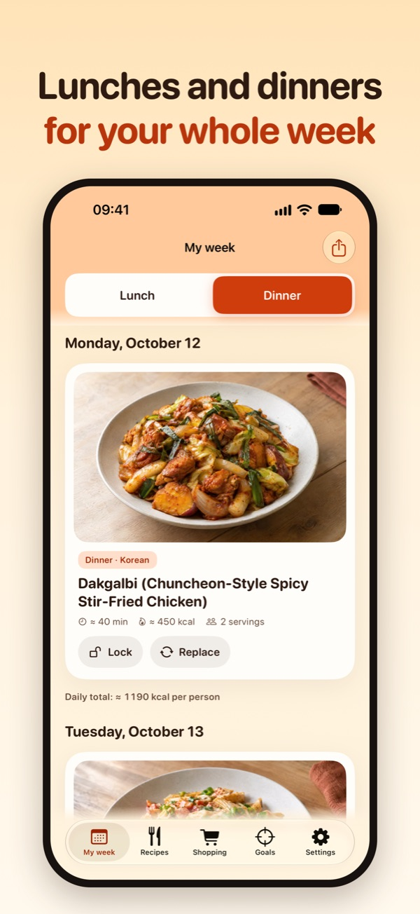
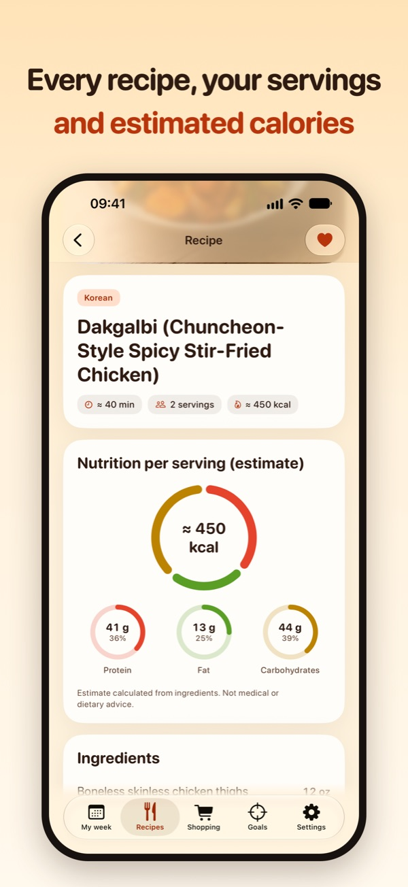
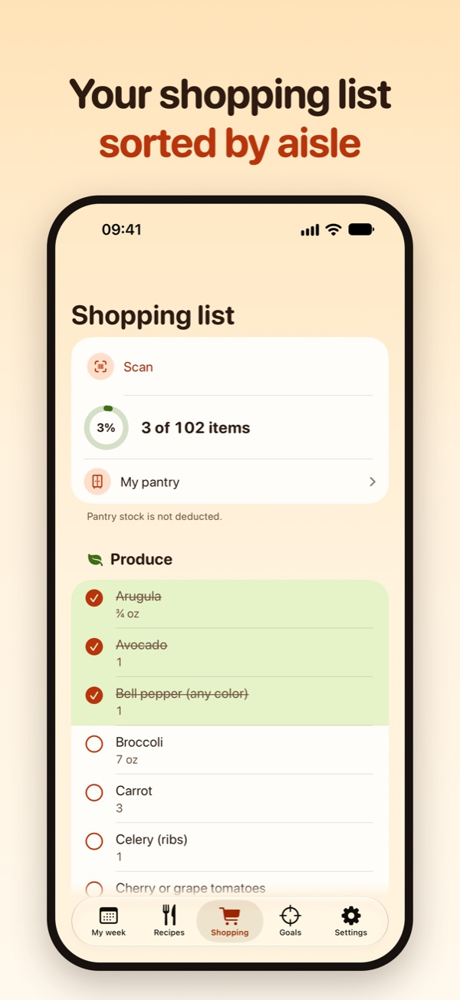
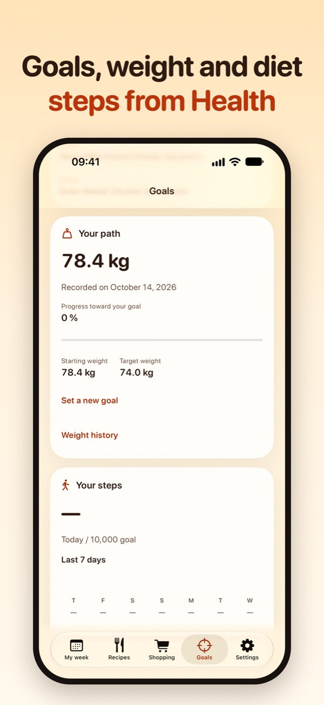

iPhone app · No account · No ads
TakeMyWeek
What’s for lunch and dinner this week? TakeMyWeek plans your lunches and dinners in one tap and builds the grocery list that goes with them, sorted by aisle.
Download on the App Store No ads, no tracking, no account. Your data stays on your iPhone. Only the optional barcode scan needs an internet connection.Your week, sorted
- Set up from your needs (version 2.2)Tell TakeMyWeek what matters to you: eating more balanced, saving time, more protein, cooking for the family, moving more or losing weight gently. A few questions, and your meals, diet, cooking time and goals are set up for you, with a short summary of the choices made. Change everything any time in Settings › My needs and goals.
- Cheers and gentle encouragement (version 2.2)A short message when you plan a week, finish your shopping list or reach your step goal, and a discreet card in Goals. In the app only, with no notifications.
- Lunches and dinners in one tapPlan 5 or 7 days, dinners only or lunches and dinners. Lock the meals you like, reshuffle the rest, or replace a single meal.
- One grocery list, sorted by aisleQuantities are added up for your servings and rounded to whole items. Deduct what is already in your pantry.
- More than 1,000 recipes in 10 collections (version 2.1)Classics, French, Chinese, Korean, Caribbean, African, easy 20-minute meals, light and protein-rich, and two new collections: Low calorie (under 400 kcal per serving, estimated) and Réunion Island. Every recipe shows estimated calories, protein, fat and carbs per serving.
- Your filters, respectedServings, a time limit, ten diets, excluded ingredients and allergens. The app never quietly loosens them.
- Goals (version 2.1, free)For adults: log your weight, set a target and get an estimated daily calorie target with safeguards, then choose one of ten diets for your next meals. Estimates only, not medical advice.
- Steps from Apple Health (version 2.1, optional)Read-only: the app reads your step count to show it next to your goals. It never writes to Health and your steps never leave your iPhone. You can also enter steps by hand.
- Barcode scan (version 2.1, Premium)Scan or type a barcode to see a product’s nutrition facts per 100 g from the open Open Food Facts database, then check it off your grocery list or add it to your pantry. Only the barcode is sent.
- 10 languages, metric or US unitsEnglish, French, Spanish, German, Italian, Portuguese (Brazil), Dutch, Japanese, Korean and Traditional Chinese.
- TakeMyWeek PremiumAn auto-renewable subscription, yearly with a free trial or monthly, unlocks generating and changing weeks, every recipe, advanced filters, the pantry and the barcode scan. New installations of version 2.1 may see a welcome offer for 48 hours (see the Terms of Use). Without a subscription you can browse the recipe collections, keep reading your saved week and shopping list, and use Goals and steps.




Privacy Policy
Effective October 16, 2026 · applies to TakeMyWeek (formerly Dinner Ideas, CookCart and Weekbite) for iPhone, version 1.0 and later
What stays on your iPhone
Your meal plan, preferences (number of days, meals per day, servings, time limit, diet, excluded ingredients and allergens), pantry quantities, favorites and checked shopping items are saved in a file inside the app on your device. From version 2.1, the same file holds your Goals: the profile you enter (age, height, the sex used in the calorie formula, activity level, pace), your weight log and target, your chosen diet and the steps you enter by hand. From version 2.2, it also holds your answers to the “My needs” questions: your goals, household, meals, diet choice, allergens, cooking time, recipe collections and step goal. Recently scanned products are kept in a separate local cache (at most 200 products, for 30 days). None of this leaves your iPhone unless you choose to share or export it.
Congratulations and encouragement (version 2.2 and later)
Messages are chosen on your iPhone from the data above, such as your steps or your saved week; nothing is sent. They appear only inside the app, never as notifications. A small separate file in the app lists which congratulations have already been shown and whether the “My needs” invitation was seen, so that none is repeated. It holds nothing else, is excluded from iCloud and device backups, is never included in exports and is erased by Settings › Reset data. Congratulations about weight appear only with an adult profile, above the healthy-weight threshold and at a gentle pace; no message ever praises eating less.
Apple Health (version 2.1 and later)
If you tap Connect to Health and allow it, TakeMyWeek reads only your step count from Apple Health, read-only: it never writes anything to Health. The steps it reads are used to display your daily total and your step goal; they stay on your iPhone, are not saved in the app’s file, are not included in exports and are never sent to us or to anyone else. Health data is never used for advertising or marketing. You can stop access at any time in Settings › Privacy & Security › Health › TakeMyWeek, or from the Health app. If you do not connect Health, you can still enter steps by hand.
Barcode scanning and Open Food Facts (version 2.1 and later)
Barcode scanning is an optional Premium feature and the only feature of TakeMyWeek that connects to a service other than Apple. When you scan or type a barcode, the app sends only that barcode to the Open Food Facts database (world.openfoodfacts.org) over HTTPS, to retrieve the product’s name, brand, quantity and nutrition facts. The request carries no account, no cookie and no identifier; like any internet request it reveals your device’s IP address, and it names the app and its version. Your meal plan, preferences, goals, weight and Health data are never sent. The camera image is used on your iPhone only to read the barcode; it is not recorded or sent. Open Food Facts’ own privacy policy applies to its handling of requests. Product data comes from Open Food Facts contributors and is available under the Open Database License (ODbL).
When data leaves your device — only because you asked
- Share / Export: when you share your plan or shopping list, or export a backup, iOS sends the content to the app or place you pick. A JSON backup contains your plan, preferences, favorites, pantry, from version 2.1 your Goals profile, diet, weight log and hand-entered steps, and from version 2.2 your “My needs” answers. It never contains the steps read from Apple Health. Backups are not encrypted by TakeMyWeek: keep them somewhere safe.
- iCloud / device backups: like other app data, the app’s file may be included in your iPhone’s backups under your Apple Account settings.
- Barcode scan: only the barcode, as described above.
- Links: a link you tap in the app opens in your browser or the App Store, where that website’s own privacy policy applies.
Purchases and subscriptions
TakeMyWeek Premium is bought through Apple’s App Store. Apple processes the payment and manages the subscription under its own privacy policy. We never receive your name, your Apple Account or your payment details. The app only asks Apple’s purchase system on your iPhone whether a subscription is active. For the welcome offer (version 2.1), the app stores in your iPhone’s keychain the time of its first opening and whether the offer applies to this installation. This item stays on this device, is not synced with iCloud and is never sent; it may remain on the device after the app is deleted, so that the 48-hour window is not restarted by reinstalling.
Network
The recipe catalog is built into the app, and the app sends nothing to us. It contacts the App Store to show the subscription offers and to check or restore a purchase, and, only when you use the barcode scan, Open Food Facts as described above. Everything else works offline.
Children
TakeMyWeek collects no information from anyone, including children. Goals (weight and calorie target) are for adults aged 18 and over; the app refuses a profile under 18.
Health information
Calories, macronutrients, diet labels, calorie targets and step goals are estimates and general information, not medical or dietary advice. The calorie target uses a published formula with safeguards (minimum daily intake, gentle or moderate pace, no weight-gain goal); it cannot predict your results. If you are pregnant or breastfeeding, have a medical condition, or have or had an eating disorder, talk to a health professional before changing your diet; if you tell the app so in your profile, it does not calculate a calorie deficit. Diet and allergen filters are based on ingredient labels in our catalog: always check product packaging for allergens and cross-contamination.
Deleting your data
Data stays on your iPhone until you replace it or delete the app. Settings › Reset data clears the active data (plan, preferences, favorites, pantry, shopping checks, Goals, “My needs” answers, the list of congratulations already shown and the scanned-product cache) but keeps a local recovery copy on the device; delete the app (rather than offloading it) to remove everything stored by the app. The welcome-offer item in the keychain may remain on the device, as explained above. Steps stay in the Health app, which you control. Exported backup files are yours to delete separately. Because we hold nothing on any server, there is nothing to request from us.
Changes and contact
If this policy changes, the new version will be posted on this page with a new effective date. Questions: see the contact address below.
Terms of Use
Effective October 14, 2026
TakeMyWeek is licensed under Apple’s standard Licensed Application End User License Agreement.
TakeMyWeek Premium
- Premium is an auto-renewable subscription, offered yearly (with a free trial for new subscribers, when available) or monthly. Prices are shown in the app before you buy and depend on your country.
- Payment is charged to your Apple Account when you confirm the purchase. The subscription renews automatically unless it is cancelled at least 24 hours before the end of the current period.
- You can manage or cancel your subscription at any time in your App Store account settings. Deleting the app does not cancel a subscription.
Welcome offer (version 2.1)
- On a new installation of version 2.1, the Goals tab may show a welcome offer for 48 hours after the app is first opened on that iPhone. It is not shown on an iPhone that already had TakeMyWeek data, and it disappears when the 48 hours are over or if you already subscribe.
- It is a yearly subscription whose first year is paid upfront, in a single payment, at a reduced introductory price; it then renews at the regular yearly price shown before purchase, unless you cancel at least 24 hours before the end of the first year.
- Apple decides eligibility: an introductory offer can be used once per subscription group, so it may be unavailable if you already used a free trial or another introductory offer of TakeMyWeek Premium.
Recipes and nutrition
Cooking times, calories and macronutrients are estimates computed from the ingredients; they are not medical or dietary advice. Recipes have not all been tested in a kitchen. Recipe pictures are illustrations. Always check packaging for allergens.
Goals, steps and product data
Goals, calorie targets and step goals are general estimates for adults and do not replace advice from a health professional. Product information from the barcode scan comes from the open, collaborative Open Food Facts database (ODbL); it may be incomplete or out of date: check the packaging.
Support
We read every message and usually answer within a few days.
balustreyonni@gmail.com
- How do I change my needs and goals?
- Go to Settings › My needs and goals: the questions open filled in with your current answers and settings. Saving updates your settings and goals; your saved week stays as it is until you prepare a new one. Changing the number of servings is part of Premium, as in the week’s preferences.
- Do the congratulations send notifications?
- No. They appear only inside the app, for a few seconds or until you tap them, and each one is shown once.
- "Not enough compatible recipes" — why?
- Your filters (time limit, diet, excluded ingredients or allergens) leave fewer recipes than meals in your week. The app tells you whether lunches or dinners are missing and never loosens your filters on its own: raise the time limit, choose 5 days instead of 7, plan dinners only, or remove an exclusion. When it sets things up from your needs, it only adjusts what it chose for you (such as the diet or the cooking time) and says so in the summary; your allergens, a diet you picked and your collections are never changed.
- How do I plan lunches as well as dinners?
- In your week’s preferences, choose lunches and dinners. Your week then has a Lunch tab and a Dinner tab; locked meals stay as they are when you generate again.
- How do I keep a meal and reshuffle the rest?
- Tap Lock on the meals you want to keep, then generate your week again. Use Replace to swap a single meal.
- How do Goals work?
- Open the Goals tab, enter your profile (adults only), your current and target weight and your pace. The app estimates a daily calorie target with safeguards and lets you choose one of ten diets for your next meals. Your current week stays as it is until you generate again.
- How do I connect or disconnect my steps?
- In Goals, tap Connect to Health and allow reading the step count. To stop, go to Settings › Privacy & Security › Health › TakeMyWeek, or use the Health app. If there is no data or access is off, you can enter steps by hand.
- The barcode scan does not find my product.
- The scan needs an internet connection and a TakeMyWeek Premium subscription. If a product is not in Open Food Facts, check the barcode or try another product; you can also type the barcode digits.
- I do not see the welcome offer.
- It appears in the Goals tab only on a new installation of version 2.1, during the 48 hours after the first opening, if Apple confirms that your account is eligible and you are not already subscribed.
- Why does the shopping list say 1 avocado when the recipe uses half?
- The list rounds whole items up so you buy what you need; recipe pages show exact amounts for your servings.
- Can I use metric units?
- Yes: choose metric or US units in Settings, in any of the 10 languages.
- How do I manage, cancel or restore my subscription?
- Manage or cancel it in the Settings app of your iPhone: tap your name, then Subscriptions. On a new device, open TakeMyWeek, go to Settings › Subscription and tap Restore purchases.
- What can I do without a subscription?
- You can browse the recipe collections, keep reading your saved week, its recipes and your shopping list, and use Goals and steps. Generating or changing a week, opening other recipes, advanced filters, the pantry and the barcode scan are part of Premium.
- How do I move my data to a new iPhone?
- Settings › Export JSON backup creates a backup file; open it with Settings › Import JSON backup on the new device. Steps from Apple Health are not in the backup: connect Health again on the new iPhone.
En français
App iPhone · Sans compte · Sans publicité
Qu’est-ce qu’on mange cette semaine, à midi et le soir ? TakeMyWeek prépare vos déjeuners et vos dîners en un geste et la liste de courses qui va avec, classée par rayon.
Sans publicité, sans suivi, sans compte. Vos données restent sur votre iPhone. Seul le scan de codes-barres, facultatif, demande une connexion internet.
Ce que fait l’app
- Réglée selon vos besoins (version 2.2). Dites à TakeMyWeek ce qui compte pour vous : manger plus équilibré, gagner du temps, plus de protéines, cuisiner pour la famille, bouger plus ou perdre du poids en douceur. Quelques questions, et vos repas, votre régime, votre temps de cuisine et vos objectifs sont réglés pour vous, avec un court récapitulatif des choix faits. Tout se modifie à tout moment dans Réglages › Mes besoins et objectifs.
- Félicitations et encouragements (version 2.2). Un court message quand vous préparez une semaine, terminez vos courses ou atteignez votre objectif de pas, et une carte discrète dans Objectifs. Uniquement dans l’app, sans notification.
- Déjeuners et dîners en un geste. Planifiez 5 ou 7 jours, les dîners seuls ou les déjeuners et les dîners. Verrouillez les repas qui vous plaisent, renouvelez les autres ou remplacez un seul repas.
- Une liste de courses classée par rayon. Les quantités sont additionnées pour vos portions et arrondies à l’unité. Déduisez ce que vous avez déjà dans votre placard.
- Plus de 1 000 recettes en 10 rubriques (version 2.1). Classiques, française, chinoise, coréenne, antillaise, africaine, repas de la flemme, léger et protéiné, et deux nouvelles rubriques : Bas en calories (moins de 400 kcal par portion, valeurs estimées) et Réunionnaise. Chaque recette affiche les calories, protéines, lipides et glucides estimés par portion.
- Vos filtres, respectés. Portions, temps maximal, dix régimes, ingrédients et allergènes exclus. L’app ne les assouplit jamais d’elle-même.
- Objectifs (version 2.1, gratuit). Pour les adultes : notez votre poids, fixez un poids cible et obtenez un objectif calorique quotidien estimé, avec des garde-fous, puis choisissez l’un des dix régimes pour vos prochains repas. Ce sont des estimations, pas un avis médical.
- Pas depuis Santé (version 2.1, facultatif). En lecture seule : l’app lit votre nombre de pas pour l’afficher à côté de vos objectifs. Elle n’écrit jamais dans Santé et vos pas ne quittent pas votre iPhone. Vous pouvez aussi saisir vos pas à la main.
- Scan de codes-barres (version 2.1, Premium). Scannez ou saisissez un code-barres pour voir les valeurs nutritionnelles pour 100 g d’un produit, tirées de la base ouverte Open Food Facts, puis cochez-le dans vos courses ou ajoutez-le à votre placard. Seul le code-barres est envoyé.
- 10 langues, unités métriques ou américaines.
- TakeMyWeek Premium. Abonnement à renouvellement automatique, annuel avec essai gratuit ou mensuel. Il débloque la création et la modification des semaines, toutes les recettes, les filtres avancés, le placard et le scan. Les nouvelles installations de la version 2.1 peuvent voir une offre de bienvenue pendant 48 heures (voir les conditions d’utilisation). Sans abonnement, vous pouvez parcourir les rubriques, relire votre semaine et vos courses enregistrées, et utiliser les Objectifs et les pas.
Politique de confidentialité
En vigueur le 16 octobre 2026 · s’applique à TakeMyWeek (anciennement Dinner Ideas, CookCart et Weekbite) pour iPhone, version 1.0 et suivantes.
TakeMyWeek ne collecte, ne stocke sur un serveur, ne partage ni ne vend aucune donnée personnelle. Pas de compte, de publicité, d’analyse ni de traceur ; nous ne recevons aucune de vos données.
Ce qui reste sur votre iPhone. Votre planning, vos préférences (nombre de jours, repas par jour, portions, temps maximal, régime, ingrédients et allergènes exclus), votre placard, vos favoris et vos coches de courses sont enregistrés dans un fichier de l’app sur votre appareil. Depuis la version 2.1, ce fichier contient aussi vos Objectifs : le profil que vous saisissez (âge, taille, sexe utilisé par la formule de calcul, niveau d’activité, rythme), votre journal de poids et votre poids cible, votre régime et les pas saisis à la main. Depuis la version 2.2, il contient aussi vos réponses aux questions « Mes besoins » : vos objectifs, votre foyer, vos repas, votre choix de régime, vos allergènes, votre temps de cuisine, vos rubriques de recettes et votre objectif de pas. Les derniers produits scannés sont gardés dans un cache local séparé (200 produits au plus, pendant 30 jours). Rien de tout cela ne quitte votre iPhone, sauf si vous choisissez de le partager ou de l’exporter.
Félicitations et encouragements (version 2.2 et suivantes). Les messages sont choisis sur votre iPhone à partir des données ci-dessus, par exemple vos pas ou votre semaine enregistrée ; rien n’est envoyé. Ils s’affichent uniquement dans l’app, jamais en notification. Un petit fichier séparé de l’app retient seulement les félicitations déjà affichées et si l’invitation « Mes besoins » a été vue, pour ne rien répéter. Il ne contient rien d’autre, est exclu des sauvegardes iCloud et de l’appareil, ne figure jamais dans les exports et est effacé par Réglages › Réinitialiser les données. Les félicitations liées au poids n’apparaissent qu’avec un profil adulte, au-dessus du seuil de poids de santé et à un rythme doux ; aucun message ne félicite de manger moins.
Santé (version 2.1 et suivantes). Si vous touchez Connecter à Santé et l’autorisez, TakeMyWeek lit uniquement votre nombre de pas dans l’app Santé, en lecture seule : elle n’y écrit jamais rien. Les pas lus servent à afficher votre total du jour et votre objectif de pas ; ils restent sur votre iPhone, ne sont pas enregistrés dans le fichier de l’app, ne figurent pas dans les exports et ne sont jamais envoyés, ni à nous ni à personne. Les données de Santé ne servent jamais à la publicité ni au marketing. Vous pouvez retirer l’accès à tout moment dans Réglages › Confidentialité et sécurité › Santé › TakeMyWeek, ou depuis l’app Santé. Sans Santé, vous pouvez saisir vos pas à la main.
Scan de codes-barres et Open Food Facts (version 2.1 et suivantes). Le scan est une fonction Premium facultative ; c’est la seule fonction de TakeMyWeek qui se connecte à un service autre qu’Apple. Quand vous scannez ou saisissez un code-barres, l’app envoie uniquement ce code-barres à la base Open Food Facts (world.openfoodfacts.org), en HTTPS, pour obtenir le nom, la marque, la quantité et les valeurs nutritionnelles du produit. La requête ne contient ni compte, ni cookie, ni identifiant ; comme toute requête internet, elle révèle l’adresse IP de votre appareil, et elle indique le nom et la version de l’app. Votre planning, vos préférences, vos objectifs, votre poids et vos données de Santé ne sont jamais envoyés. L’image de la caméra sert uniquement, sur votre iPhone, à lire le code-barres ; elle n’est ni enregistrée ni envoyée. La politique de confidentialité d’Open Food Facts s’applique au traitement de ses requêtes. Les données produit viennent des contributeurs d’Open Food Facts et sont disponibles sous licence Open Database License (ODbL).
Quand des données quittent votre appareil, c’est parce que vous l’avez demandé.
- Partage et export : quand vous partagez votre planning ou vos courses, ou exportez une sauvegarde, iOS transmet le contenu à l’app ou à l’endroit que vous choisissez. Une sauvegarde JSON contient votre planning, vos préférences, vos favoris, votre placard, depuis la version 2.1 votre profil d’Objectifs, votre régime, votre journal de poids et vos pas saisis à la main, et depuis la version 2.2 vos réponses « Mes besoins » ; jamais les pas lus dans Santé. Les sauvegardes ne sont pas chiffrées par TakeMyWeek : rangez-les en lieu sûr.
- Sauvegardes iCloud ou de l’appareil : comme les autres données d’app, le fichier peut être inclus dans les sauvegardes de votre iPhone selon les réglages de votre compte Apple.
- Scan de codes-barres : uniquement le code-barres, comme indiqué ci-dessus.
- Liens : un lien touché dans l’app s’ouvre dans votre navigateur ou l’App Store, où la politique de confidentialité du site s’applique.
Achats et abonnements. TakeMyWeek Premium s’achète dans l’App Store d’Apple. Apple traite le paiement et gère l’abonnement selon sa propre politique de confidentialité. Nous ne recevons jamais votre nom, votre compte Apple ni vos données de paiement. L’app demande seulement au système d’achat d’Apple, sur votre iPhone, si un abonnement est actif. Pour l’offre de bienvenue (version 2.1), l’app enregistre dans le trousseau de votre iPhone l’heure de sa première ouverture et si l’offre s’applique à cette installation. Cet élément reste sur cet appareil, n’est pas synchronisé avec iCloud et n’est jamais envoyé ; il peut subsister après la suppression de l’app, afin qu’une réinstallation ne relance pas le délai de 48 heures.
Réseau. Le catalogue de recettes est intégré à l’app, et l’app ne nous envoie rien. Elle contacte l’App Store pour afficher les offres d’abonnement et vérifier ou restaurer un achat, et, seulement quand vous utilisez le scan, Open Food Facts comme décrit ci-dessus. Tout le reste fonctionne hors connexion.
Enfants. TakeMyWeek ne collecte aucune information, auprès de personne, enfants compris. Les Objectifs (poids et objectif calorique) sont réservés aux adultes de 18 ans et plus ; l’app refuse un profil de moins de 18 ans.
Informations de santé. Les calories, les macronutriments, les régimes, l’objectif calorique et l’objectif de pas sont des estimations et des informations générales, pas un avis médical ou diététique. L’objectif calorique repose sur une formule publiée, avec des garde-fous (apport minimal quotidien, rythme doux ou modéré, aucune prise de poids visée) ; il ne peut pas prédire vos résultats. Si vous êtes enceinte ou allaitez, avez une maladie, ou avez ou avez eu un trouble du comportement alimentaire, parlez-en à un professionnel de santé avant de changer d’alimentation ; si vous l’indiquez dans votre profil, l’app ne calcule pas de déficit calorique. Les filtres de régime et d’allergènes reposent sur les ingrédients de notre catalogue : vérifiez toujours les emballages (allergènes, contaminations croisées).
Suppression. Les données restent sur votre iPhone jusqu’à ce que vous les remplaciez ou supprimiez l’app. Réglages › Réinitialiser les données efface les données actives (planning, préférences, favoris, placard, coches de courses, Objectifs, réponses « Mes besoins », liste des félicitations déjà affichées et cache des produits scannés), mais conserve une copie de récupération sur l’appareil ; supprimez l’app (plutôt que de la décharger) pour effacer tout ce qu’elle a enregistré. L’élément de l’offre de bienvenue peut rester dans le trousseau, comme expliqué plus haut. Vos pas restent dans l’app Santé, que vous contrôlez. Les fichiers de sauvegarde exportés se suppriment séparément. Comme nous ne détenons rien sur aucun serveur, il n’y a rien à nous demander.
Modifications. Si cette politique change, la nouvelle version sera publiée sur cette page avec sa date d’effet. Version en vigueur : 16 octobre 2026.
Conditions d’utilisation
En vigueur le 14 octobre 2026
TakeMyWeek est concédée sous le contrat de licence standard d’Apple.
TakeMyWeek Premium. Abonnement à renouvellement automatique, annuel (avec essai gratuit pour les nouveaux abonnés, quand il est proposé) ou mensuel. Les prix sont affichés dans l’app avant l’achat et dépendent de votre pays. Le paiement est prélevé sur votre compte Apple à la confirmation de l’achat ; l’abonnement se renouvelle automatiquement, sauf résiliation au moins 24 heures avant la fin de la période en cours. Vous pouvez le gérer ou le résilier à tout moment dans les réglages de votre compte App Store ; supprimer l’app ne résilie pas l’abonnement.
Offre de bienvenue (version 2.1). Sur une nouvelle installation de la version 2.1, l’onglet Objectifs peut proposer une offre de bienvenue pendant les 48 heures qui suivent la première ouverture de l’app sur cet iPhone. Elle n’apparaît pas sur un iPhone qui contenait déjà des données de l’app, et disparaît à la fin des 48 heures ou si vous êtes déjà abonné. Il s’agit d’un abonnement annuel dont la première année est payée d’avance, en une seule fois, à un prix de lancement réduit ; il se renouvelle ensuite au prix annuel habituel affiché avant l’achat, sauf résiliation au moins 24 heures avant la fin de la première année. Apple décide de l’éligibilité : une offre de lancement ne peut servir qu’une fois par groupe d’abonnements ; elle peut donc être indisponible si vous avez déjà profité d’un essai gratuit ou d’une autre offre de lancement de TakeMyWeek Premium.
Recettes et nutrition. Les durées, les calories et les macronutriments sont des estimations calculées à partir des ingrédients ; ce n’est pas un avis médical ou diététique. Les recettes n’ont pas toutes été testées en cuisine. Les photos des recettes sont des illustrations. Vérifiez toujours les allergènes sur les emballages.
Objectifs, pas et données produit. Les objectifs, l’objectif calorique et l’objectif de pas sont des estimations générales destinées aux adultes ; ils ne remplacent pas l’avis d’un professionnel de santé. Les informations produit du scan viennent de la base ouverte et collaborative Open Food Facts (ODbL) ; elles peuvent être incomplètes ou dépassées : vérifiez l’emballage.
Assistance
Nous lisons chaque message et répondons généralement en quelques jours : balustreyonni@gmail.com.
- Comment modifier mes besoins et objectifs ?
- Allez dans Réglages › Mes besoins et objectifs : les questions s’ouvrent préremplies avec vos réponses et réglages actuels. L’enregistrement met à jour vos réglages et objectifs ; votre semaine enregistrée reste telle quelle jusqu’à ce que vous en prépariez une nouvelle. Changer le nombre de portions fait partie de Premium, comme dans les préférences de la semaine.
- Les félicitations envoient-elles des notifications ?
- Non. Elles s’affichent uniquement dans l’app, quelques secondes ou jusqu’à ce que vous les touchiez, et chacune une seule fois.
- « Pas assez de recettes compatibles » : pourquoi ?
- Vos filtres (temps maximal, régime, ingrédients ou allergènes exclus) laissent moins de recettes que de repas dans votre semaine. L’app indique s’il manque des déjeuners ou des dîners et n’assouplit jamais vos filtres d’elle-même : augmentez le temps maximal, passez à 5 jours, planifiez seulement les dîners ou retirez une exclusion. Quand elle règle tout selon vos besoins, elle n’ajuste que ce qu’elle a choisi pour vous (par exemple le régime ou le temps de cuisine) et le dit dans le récapitulatif ; vos allergènes, un régime que vous avez choisi et vos rubriques ne sont jamais modifiés.
- Comment planifier les déjeuners en plus des dîners ?
- Dans les préférences de la semaine, choisissez déjeuners et dîners. La semaine a alors un onglet Déjeuner et un onglet Dîner ; les repas verrouillés restent en place quand vous générez de nouveau.
- Comment fonctionnent les Objectifs ?
- Ouvrez l’onglet Objectifs, saisissez votre profil (adultes seulement), votre poids actuel, votre poids cible et votre rythme. L’app estime un objectif calorique quotidien avec des garde-fous et vous laisse choisir l’un des dix régimes pour vos prochains repas. Votre semaine en cours reste telle quelle jusqu’à la prochaine génération.
- Comment connecter ou déconnecter mes pas ?
- Dans Objectifs, touchez Connecter à Santé et autorisez la lecture du nombre de pas. Pour arrêter : Réglages › Confidentialité et sécurité › Santé › TakeMyWeek, ou l’app Santé. Sans données ou sans accès, vous pouvez saisir vos pas à la main.
- Le scan ne trouve pas mon produit.
- Le scan demande une connexion internet et un abonnement TakeMyWeek Premium. Si un produit n’est pas dans Open Food Facts, vérifiez le code-barres ou essayez un autre produit ; vous pouvez aussi saisir les chiffres du code.
- Je ne vois pas l’offre de bienvenue.
- Elle apparaît dans l’onglet Objectifs seulement sur une nouvelle installation de la version 2.1, pendant les 48 heures qui suivent la première ouverture, si Apple confirme que votre compte y a droit et que vous n’êtes pas déjà abonné.
- Comment gérer, résilier ou restaurer mon abonnement ?
- Gérez-le ou résiliez-le dans l’app Réglages de votre iPhone : touchez votre nom, puis Abonnements. Sur un nouvel appareil, ouvrez TakeMyWeek, allez dans Réglages › Abonnement et touchez Restaurer les achats.
- Que puis-je faire sans abonnement ?
- Parcourir les rubriques, relire votre semaine enregistrée, ses recettes et vos courses, et utiliser les Objectifs et les pas. Créer ou modifier une semaine, ouvrir les autres recettes, les filtres avancés, le placard et le scan font partie de Premium.
- Comment transférer mes données sur un nouvel iPhone ?
- Réglages › Exporter une sauvegarde JSON crée un fichier ; ouvrez-le avec Réglages › Importer une sauvegarde JSON sur le nouvel appareil. Les pas de Santé ne sont pas dans la sauvegarde : reconnectez Santé sur le nouvel iPhone.